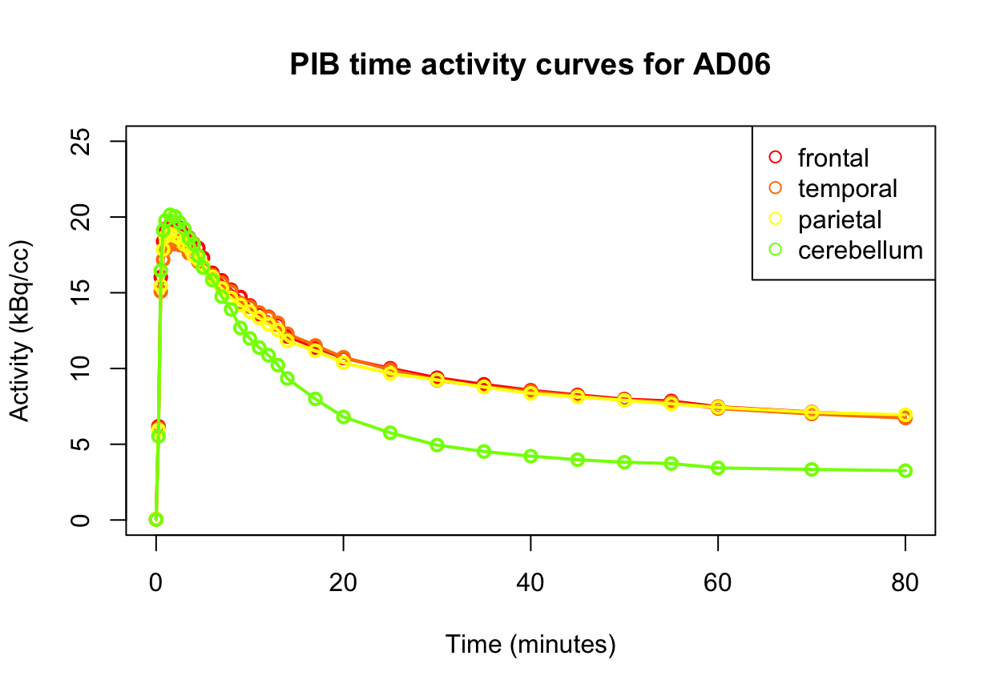
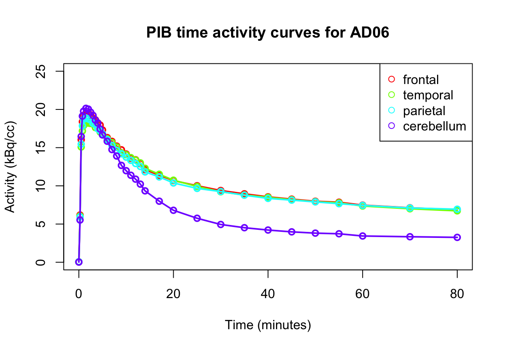

There are two approaches to using the tacmagic package to analyze PET time-activity curve data: either by loading participant data individually and using the various functions to analyze it, or via the batch functions to list and analyze data from multiple participants. Here, we illustrate the main features of tacmagic, by walking through the analysis of a single participant. We provide an explanation of the batch mode at the end.
Positron emission tomography (PET) is a research and clinical imaging modality that uses radioactive tracers that bind to target molecules of interest. A PET scanner identifies the tracer location by virtue of the tracer’s radioactive decay, providing information to determine the location of the target in the body. As the spatial resolution of PET is relatively poor, analysis is frequently combined with higher resolution imaging such as magnetic resonance imaging (MRI), which can be spatially co-registered to the PET image. Subsequently, radiotracer activity (over time) can be identified by spatial region of interest (ROI). The resulting analysis produces time-activity curves (tac) which can be further analyzed to answer important clinical and research questions (magic).
The sample data for this analysis uses an anonymized scans of a participant with Alzheimer’s dementia, data from http://www.gaain.org which was generously made available for unrestricted use.1 The radiotracer used is Pittsburgh Compound B (PIB) which binds to beta-amyloid, a protein found in high concentration in the brains of individuals with Alzheimer’s dementia.
Time-activity curve (TAC) data is loaded via load_tac(), which is a wrapper for format-specific functions. To specify which file format the tac data is stored as, use the format parameter. Supported formats can be viewed in help(load_tac()).
The minimal amount of information required is the TAC data for one or more ROI, including the start and stop times of each frame, the time units and the activity units. This information may be in 1 or more files depending on the format and software that created it.
For example, PMOD’s .tac files contain all of the information, but the TAC .voistat files do not contain start and stop times, but this information could be specified using a .acqtimes file. Support is also available for DFT format, which contains both TAC and volume data.
We processed the PIB PET and T1 MRI data with the PMOD PNEURO software suite to produce a .tac file with tacs for all ROIs in the Hammer’s atlas. The .tac file can be loaded with load_tac():
# Filename is a character string of the file's path on your computer.
filename <- system.file("extdata", "AD06.tac", package="tacmagic")
# Note: This file can also serve as a template if the tac data is in some other
# format that is not yet supported.
AD06_tac <- load_tac(filename, format="PMOD")
AD06_tac[1:5,1:5] # the first 5 frames of the first 3 ROIs
#> start end FL_mid_fr_G_l FL_mid_fr_G_r FL_precen_G_l
#> 1 0 15 0.05156934 0.0830544 -0.05035268
#> 2 15 30 5.76280770 5.9782509 6.15967912
#> 3 30 45 16.07137663 16.3756559 16.69802808
#> 4 45 60 19.11766922 19.4707593 18.52006408
#> 5 60 90 19.77191392 20.3383362 19.55189423PMOD’s suite also produces .voistat and .acqtimes formats, than can be used to produce the same data if you do not have .tac files:
filename_acq <- system.file("extdata", "AD06.acqtimes", package="tacmagic")
filename_voistat <- system.file("extdata", "AD06_TAC.voistat", package="tacmagic")
tac2 <- load_tac(filename_voistat, format="voistat", acqtimes=filename_acq)
all.equal(AD06_tac, tac2)
#> [1] TRUEWe also used Turku’s magia pipeline to process the same data. It can be loaded similarly, though with units explicitly entered because the information is not encoded in the .mat file:
f_magia <- system.file("extdata", "AD06_tac_magia.mat", package="tacmagic")
AD06_tac_magia <- load_tac(f_magia, format="magia",
time_unit="seconds", activity_unit="kBq/cc")
AD06_tac_magia[1:5,1:5]
#> start end CGA CGP LOC
#> 1 0 15 0.2070033 0.04986614 -0.001164075
#> 2 15 30 7.8729520 7.12711797 6.058719929
#> 3 30 45 16.6898445 17.37585231 18.097222061
#> 4 45 60 17.7306580 19.33122997 21.146157237
#> 5 60 90 18.9857118 19.57800502 22.009607171Often it is desirable to combine tac ROIs into larger ROIs. For example, if the PET analysis pipeline created tacs for each atlas ROI, your analysis may call for merging these atomic ROIs into larger regions, such as merging all of the atlas ROIs that make up the frontal lobe into a single frontal lobe ROI.
If this is done, the means should be weighted for the relative volumes of the atomic ROIs. If volume information is available, tac_roi() provides this functionality.
In PMOD’s software, volume information is available in .voistat files. Units do not matter because it is the relative volume information that is needed.
In addition to tac and volume information, we must specify which atomic ROIs make up the merged ROI. This is done by providing a named list, where the names are the merged ROIs and the list items are themselves lists of the atomic ROIs that make up each merged ROI. For the Hammer’s atlas, and as an example, typical data is provided in roi_ham_stand(), roi_ham_full(), or roi_ham_pib().
AD06_volume <- load_vol(filename_voistat, format="voistat")
roi_ham_pib()[1:2] # The first 2 definitions of merged ROIs, as an example.
#> $leftfrontal
#> [1] "FL_mid_fr_G_l" "FL_precen_G_l" "FL_strai_G_l"
#> [4] "FL_OFC_AOG_l" "FL_inf_fr_G_l" "FL_sup_fr_G_l"
#> [7] "FL_OFC_MOG_l" "FL_OFC_LOG_l" "FL_OFC_POG_l"
#> [10] "Subgen_antCing_l" "Subcall_area_l" "Presubgen_antCing_l"
#>
#> $rightfrontal
#> [1] "FL_mid_fr_G_r" "FL_precen_G_r" "FL_strai_G_r"
#> [4] "FL_OFC_AOG_r" "FL_inf_fr_G_r" "FL_sup_fr_G_r"
#> [7] "FL_OFC_MOG_r" "FL_OFC_LOG_r" "FL_OFC_POG_r"
#> [10] "Subgen_antCing_r" "Subcall_area_r" "Presubgen_antCing_r"
AD06 <- tac_roi(tac=AD06_tac, # The tac file we loaded above.
volumes=AD06_volume, # Volume information loaded.
ROI_def=roi_ham_pib(), # ROI definitions for the Hammers atlas
merge=F, # T to also return atomic ROIs
PVC=F # to use _C ROIs (PMOD convention)
)
AD06[1:5,1:5]
#> start end leftfrontal rightfrontal lefttemporal
#> 1 0 15 0.02912641 0.05734614 0.0612965
#> 2 15 30 6.12655470 6.23215512 6.3573101
#> 3 30 45 16.06737144 16.00035525 15.4122525
#> 4 45 60 18.31769407 18.45778499 17.3612789
#> 5 60 90 19.24138550 19.18263937 17.9358282Basic tac plotting is done with plot_tac, which accepts tac data from 2 participants (or group means). The ROIs to plot are specified as a vector of ROI names as they appear in the tac object. As the tac object contains time unit information, the plot can conver to desired units, which can be specified with the time argument.
plot_tac(AD06, # tac data
ROIs=c("frontal", "temporal", "parietal", "cerebellum"), # ROIs to plot
time="minutes", # Convert x axis from seconds to minutes
title="PIB time activity curves for AD06" # A title for the plot
)
The standardized uptake value ratio (\(SUVR\)) is a simple quantification of PET activity that is commonly used from many tracers including PIB. It is the ratio of the tracer activity over a specified time period (\(Ct\)) in a target ROI to a reference region. Using a ratio allows factors that are normally required to calculate an \(SUV\) to cancel out, namely tracer dose and patient body weight, and therefore \(SUVR\) can be calculated from tac data alone:
\[SUVR = \frac{SUV_{TARGET}}{SUV_{REF}} = \frac{Ct_{TARGET}}{Ct_{REF}}\]
In the literature, SUVR is variably described and calculated using the mean of activity for the frames of the specified time period, or the area under the curve. For PIB, the mean/summed activity has been used, and the time windows have varied from starting at 40-50 minutes and ending at 60-90 minutes.2
The suvr() function calculates SUVR for all regions in a tac file based on the provided time information (as a vector of frame start times) and the specified reference region (a string). If the frames used are of different durations, the weighted mean is used.
AD06_SUVR <- suvr(AD06, # tac data
SUVR_def=c(3000,3300,3600), # = 50-70 minute window
ref="cerebellum" # reference region in tac data
)
AD06_SUVR
#> SUVR
#> leftfrontal 2.070909
#> rightfrontal 2.200107
#> lefttemporal 2.043683
#> righttemporal 2.176933
#> leftparietal 2.054232
#> rightparietal 2.169382
#> leftoccipital 1.659831
#> rightoccipital 1.827765
#> leftcingulate 2.348674
#> rightcingulate 2.396375
#> frontal 2.136009
#> temporal 2.110140
#> parietal 2.112264
#> occipital 1.744258
#> cingulate 2.371747
#> cerebellum 1.000000
#> totalcortical 2.073093
#> leftdeep 1.788912
#> rightdeep 1.755389
#> deep 1.772272
#> ventricles 0.902195
#> whitematter 2.035768
#> amyloidcomp 2.231989An alternative method, using the area under the curve with the mid-frame times as the x-axis is available with suvr_auc() and should provide very similar results.
The Distribution Volume Ratio (DVR) is a method of quantifying tracer uptake that is used as an alternative to the SUVR in PIB studies, for example. Like SUVR, it can be calculated from tac data without the need for arterial blood sampling, by making use of a reference region. In this case, it is called the non-invasive Logan plot method. It is calculated with a graphical analysis technique described by Logan et al.3
In addition to the tac data, depending on the tracer, a value for k’ may need to be specified. For PIB, this has limited effect on the result, but can be specified, and a value of 0.2 has been recommended.4
The non-invasive Logan plot works by finding the slope of the line of the following equation after time \(t*\) where linearity has been reached:
\[\frac{\int_0^{T}C_{roi}(t)dt}{C_{roi}(t)} = DVR[\frac{\int_0^{T}C_{cer}(t)dt + C_{cer}(t) / k2`}{C_{roi}(T)}] + int \]
The time, \(t*\) (t_star), after which the relationship is linear can be found by testing the point after which the error is below a certain threshold (default is 10%). If t_star=0, then tacmagic can find the suitable value.
AD06_DVR_fr <- DVR_ref_Logan(AD06,
target="frontal", # target ROI
ref="cerebellum", # reference region
k2prime=0.2, # suitable k2' for tracer
t_star=0, # 0 to find, or can specify frame
)
#> t* is 23
AD06_DVR_fr
#> [1] 1.780057To visually confirm that the model behaved as expected with linearity, there is a plotting function:

The right plot shows the Logan model, with the vertical line representing the identified \(t*\), and the linear model fitted to the points after that time. In this case, the line after \(t*\) can be seen to fit well. The slope of that line is the DVR.
Similarly, DVR can be calculated for all ROIs, either by setting t_star manually or to 0 as before. If 0, a different value will be identified for each ROI.
AD06_DVR <- DVR_all_ref_Logan(AD06, ref="cerebellum", k2prime=0.2, t_star=23)
#> Trying leftfrontal
#> Trying rightfrontal
#> Trying lefttemporal
#> Trying righttemporal
#> Trying leftparietal
#> Trying rightparietal
#> Trying leftoccipital
#> Trying rightoccipital
#> Trying leftcingulate
#> Trying rightcingulate
#> Trying frontal
#> Trying temporal
#> Trying parietal
#> Trying occipital
#> Trying cingulate
#> Trying cerebellum
#> Trying totalcortical
#> Trying leftdeep
#> Trying rightdeep
#> Trying deep
#> Trying ventricles
#> Trying whitematter
#> Trying amyloidcomp
AD06_DVR
#> DVR
#> leftfrontal 1.7351136
#> rightfrontal 1.8241000
#> lefttemporal 1.7023599
#> righttemporal 1.7978415
#> leftparietal 1.7148840
#> rightparietal 1.8014491
#> leftoccipital 1.4303466
#> rightoccipital 1.5521520
#> leftcingulate 1.9240049
#> rightcingulate 1.9542491
#> frontal 1.7800568
#> temporal 1.7500941
#> parietal 1.7585448
#> occipital 1.4915376
#> cingulate 1.9389554
#> cerebellum 1.0000000
#> totalcortical 1.7294061
#> leftdeep 1.5304215
#> rightdeep 1.5307336
#> deep 1.5305573
#> ventricles 0.7435322
#> whitematter 1.6615718
#> amyloidcomp 1.8487819For this data, the DVR calculation has been shown to produce equivalent results as an existing tool.5
In most cases, a project will involve the analysis of multiple participants. The above workflow can be used to test and visualize an analysis, but a batch workflow will likely be preferred to analyze multiple participants.
All analyses can be run using 2 steps: a batch data loading step and a batch analysis step.
Data loading is done by batch_load(). See help(batch_load() for the required arguements.
The first argument is a vector of participant IDs that corresponds to file names, e.g.:
participants <- c("participant01", "participant02") if the files are located e.g. /mypath/participant01.tac and /mypath/participant01_TAC.voistat. In this case, the function call might look like:
my_data <- batch_load(participants, dir="/mypath/", tac_format="PMOD", roi_m=T, vol_file_suffix="_TAC.voistat", vol_format="voistat", ROI_def=roi_ham_stand(), merge=F)
The above would load the appropriate tac and voistat files, perform the ROI merging specified by ROI_def, because roi_m = TRUE, and would return a list where each element represents a participants, e.g. the first participant would be my_data$participant1.
Once the tac data is loaded, all analyses can be run using batch_tm(). The output from batch_load() is the first argument for batch_tm(). The models implemented in tacmagic can be specified using the models argument, e.g. models = c("SUVR", "Logan") to calculate both SUVR and Logan DVR. The relevant model parameters will also need to be specified, so see help(batch_tm) for all possible arguments.
For the purpose of the vignette, the list of participants will be a list of the full tac filenames (hence tac_file_suffix=""). In real-world data, the participants parameter can be a list of participant IDs that correspond to the actual filenames, i.e. the filename is made up of dir + participant + tac_file_suffix.
We will also choose not to use the roi_m option in batch_load(), which could be used to combine ROIs as outlined above.
participants <- c(system.file("extdata", "AD06.tac", package="tacmagic"),
system.file("extdata", "AD07.tac", package="tacmagic"),
system.file("extdata", "AD08.tac", package="tacmagic"))
tacs <- batch_load(participants, dir="", tac_file_suffix="")
# Since the PMOD tac files used here have 2 copies of ROIs, with and without
# PVC, we can use split_pvc to keep the PVC-corrected verions. If we had used
# roi_m here to combine ROIs, we could have specified to use the PVC versions
# in batch_load() with PVC = TRUE.
tacs <- lapply(tacs, split_pvc, PVC=TRUE)
batch <- batch_tm(tacs, models=c("SUVR", "Logan"), ref="Cerebellum_r_C",
SUVR_def=c(3000,3300,3600), k2prime=0.2, t_star=23)In the analysis of PIB/amyloid PET data, often researchers want to dichotomize patients into PIB+ vs. PIB-, i.e. to identify those with significant AD-related amyloid pathology (PIB+).
There are a number of approaches to this depending on the available data. We have implemented a method described by Aizenstein et al.6 which uses a group of participants with normal cognition to establish a cutoff value above which participants are unlikely to have minimal amyloid pathology.
The method identifies a group of participants out of the normal cognition group with higher-PIB outliers removed. An outlier is a participant with any ROI with a DVR higher than the upper inner fence, from a set of ROIs known to be associated with amyloid deposition. Such participants are removed from the group, and this process is done iteratively until no more outliers are removed. Then, cutoff values are determined from this new group for each ROI, set again as the upper inner fence. Then these cutoff values are applied to all participants, and a participant is deemed PIB+ if they have at least 1 ROI above its cutoff.
To demonstrate, a fake dataset of DVR values for 50 fake participants was generated and is available as fake_DVR. This would be equivalent to using batch_tm() on a group of participants with the "Logan" model specified.
fake_DVR[1:5,]
#> ROI1_DVR ROI2_DVR ROI3_DVR ROI4_DVR
#> p1 2.235058 3.026140 1.1420583 4.0557974
#> p2 1.677543 2.834710 1.2529424 3.3368371
#> p3 1.466090 2.856528 0.2837647 2.5383574
#> p4 1.046542 1.818056 1.2176133 2.5827267
#> p5 2.934105 1.971775 1.7611040 0.8371429To calculate the cutoff values using this iterative method, cutoff_aiz() takes 2 arguments: the DVR data, and the names of the variables of the ROI DVRs to use (and there must be at least 2 for this method).
cutoffs <- cutoff_aiz(fake_DVR, c("ROI1_DVR", "ROI2_DVR", "ROI3_DVR", "ROI4_DVR"))
#> Iteration: 1 Removed: 10
#> Iteration: 2 Removed: 1
#> Iteration: 3 Removed: 0
cutoffs
#> ROI1_DVR ROI2_DVR ROI3_DVR ROI4_DVR
#> 1.370899 1.332725 1.330504 1.273470The final step is to apply the cutoffs to the full set of participants. We will use the same sample data:
positivity_table <- pos_anyroi(fake_DVR, cutoffs)
positivity_table
#> p1 p2 p3 p4 p5 p6 p7 p8 p9 p10 p11 p12
#> TRUE TRUE TRUE TRUE TRUE TRUE TRUE TRUE TRUE TRUE FALSE FALSE
#> p13 p14 p15 p16 p17 p18 p19 p20 p21 p22 p23 p24
#> FALSE FALSE FALSE FALSE FALSE FALSE FALSE FALSE FALSE FALSE FALSE FALSE
#> p25 p26 p27 p28 p29 p30 p31 p32 p33 p34 p35 p36
#> FALSE FALSE FALSE FALSE FALSE FALSE FALSE FALSE FALSE TRUE FALSE FALSE
#> p37 p38 p39 p40 p41 p42 p43 p44 p45 p46 p47 p48
#> FALSE FALSE FALSE FALSE FALSE FALSE FALSE FALSE FALSE FALSE FALSE FALSE
#> p49 p50
#> FALSE FALSEThe algorithm identified 11 PIB+ participants. In the generation of the sample data, the DVRs from the first 10 participants were drawn from a normal distribution with mean 1.9, sd 0.6 and for the latter 40 participants, from mean 1.3, sd 0.3; thus this pattern is in line with what we would expect: all 10 of the first participants are PIB+, and just 1 of the latter 40 was (by chance).
Klunk, William E., Robert A. Koeppe, Julie C. Price, Tammie L. Benzinger, Michael D. Devous, William J. Jagust, Keith A. Johnson, et al. “The Centiloid Project: Standardizing Quantitative Amyloid Plaque Estimation by PET.” Alzheimer’s & Dementia 11, no. 1 (January 2015): 1-15.e4. https://doi.org/10.1016/j.jalz.2014.07.003.↩
Lopresti, B. J., W. E. Klunk, C. A. Mathis, J. A. Hoge, S. K. Ziolko, X. Lu, C. C. Meltzer, et al. “Simplified Quantification of Pittsburgh Compound B Amyloid Imaging PET Studies: A Comparative Analysis.” J Nucl Med 46 (2005): 1959–72.↩
Logan, J., Fowler, J. S., Volkow, N. D., Wang, G.-J., Ding, Y.-S., & Alexoff, D. L. (1996). Distribution Volume Ratios without Blood Sampling from Graphical Analysis of PET Data. Journal of Cerebral Blood Flow & Metabolism, 16(5), 834-840. https://doi.org/10.1097/00004647-199609000-00008↩
http://www.turkupetcentre.net/petanalysis/analysis_11c-pib.html↩
Aizenstein HJ, Nebes RD, Saxton JA, et al. 2008. Frequent amyloid deposition without significant cognitive impairment among the elderly. Arch Neurol 65: 1509-1517.↩